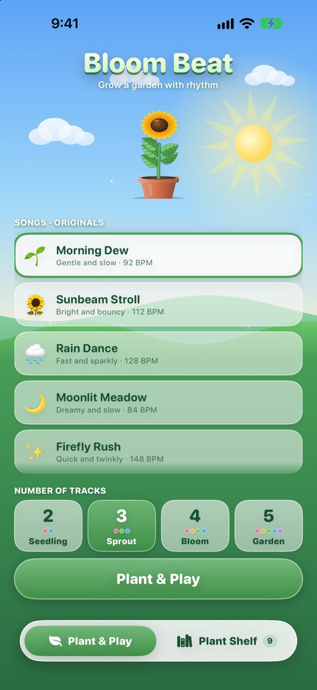
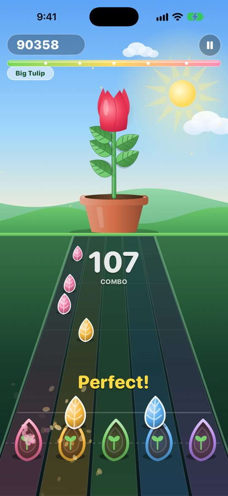
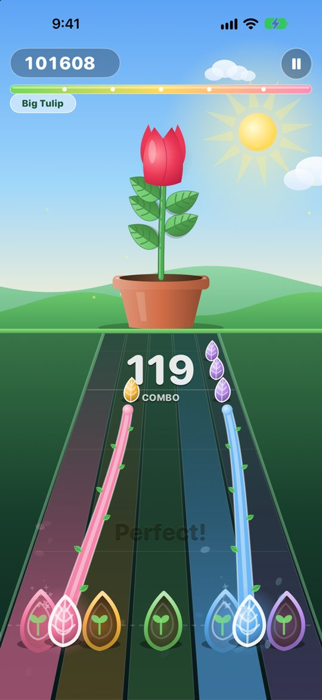
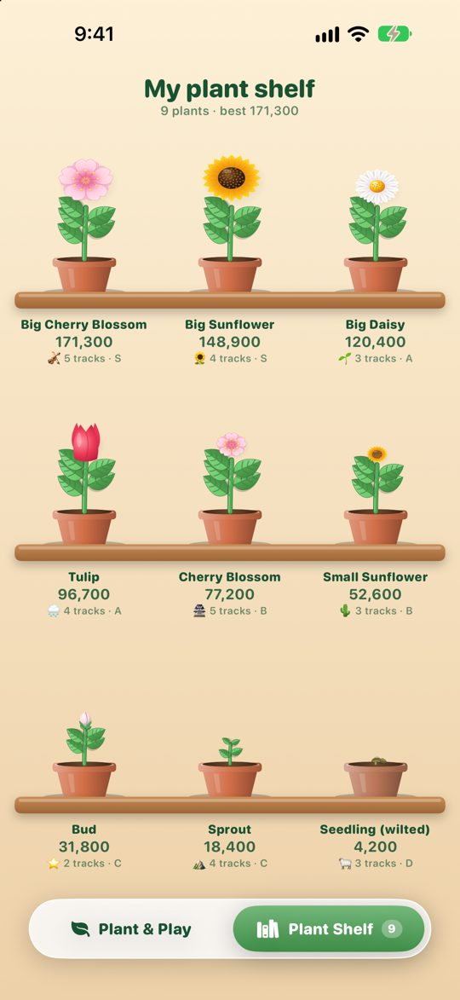
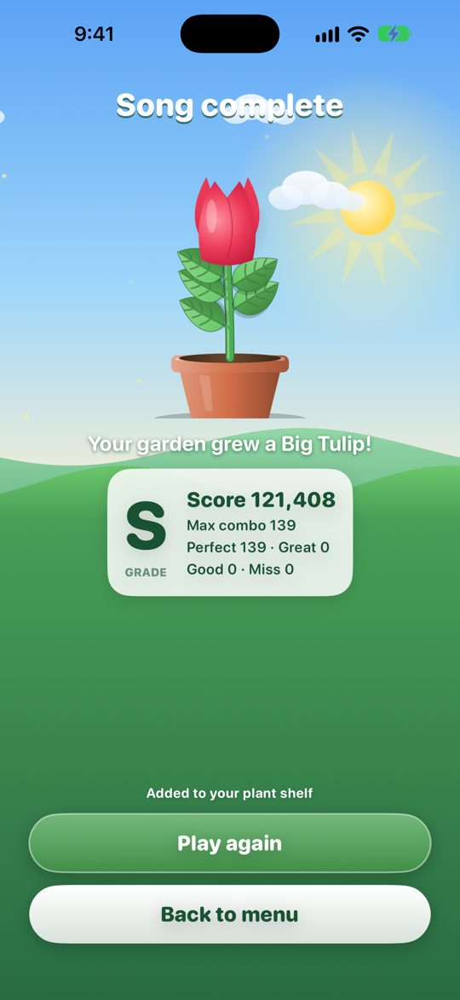

Bloom Beat: Plant Rhythm
Plant a seed. Find the beat. Watch it bloom.
Bloom Beat is a cozy rhythm game for iPhone. Every song grows one flower, from a tiny seedling to a big bloom. Hit the notes and it flourishes. Miss too many and it droops.





How to play
- Tap a lane as a leaf lands in its target.
- Hold the vines: press and keep your finger down until the tail ends.
- Drag along swinging vines (3 or more lanes).
- Double vines on fast songs (4 or more lanes): use two fingers.
- Tap both lanes for chords, and build combos for a faster-growing plant.
Features
- 31 songs, including 8 Hard mode songs, played by a built-in synthesizer
- 2, 3, 4 or 5 lanes: Seedling, Sprout, Bloom and Garden
- A Plant Shelf that keeps every plant you grow
- Haptic feedback, timing that adapts to your device, best scores saved per song
- No ads, no in-app purchases, no accounts